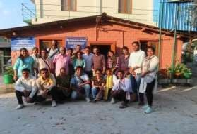
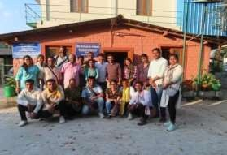

Samathuvapuam
In 1998, created a caste neutral community through a housing programme meant for all communities thus inspiring the “Samathuvapuram” idea in government.
The idea had an interested origin. In 1998, the panchayat was working for giving housing site for poor families. There was a land available where only Scheduled caste familieslived. But the homeless poor from other communities also started demanding housing sites for them. The panchayat explained to them that the only one piece of land was available that too in the area where SC community lived but surprisingly everyone agreed and the allotment was done with people from different communities lived side- by-side as neighbours to the SC families. This became a historical event and when the then CM M. Karunanidhi was approached for financial support, he appreciated it and directed all the District Collectors to replicate the model. The CM also encouraged Kuthambakkam to go for eco-friendly and cost effective technologies for constructing Samathuvapuram.
Hutless villages
His work to construct sustainable and inexpensive housing was appreciated by the then Union Minister Shri. Venkaiah Naidu when he visited Kuthambakkam and invited him to Delhi to share his ideas with other officials and elected members and also approved a huge funding for a hut less village program for Kuthambakkam.
He has built over 1100 pukka houses in the village. Dignified toilets: Over 1500 toilets, with bathing facility were built for the people
Social Development
Eliminating illicit arrack in his village and finding livelihoods for hooch producing families; Prevailed over vested interests that sought to remove him as president but sought it out with people support.
79 SHGs were formed during his period, today the groups have a revolving fund of more than 20 CRs .
Village Development
Elango started a Rural Technology Resource Centre at Kuthambakkam that seeks to use appropriate technologies to train rural youth, women and farmers forlivelihood.
To stop children from dropping out of school, he helped upgrade the village school from Middle to High school and then to a Higher secondary school.
Several micro enterprises were developed to make the village self dependent.
High School Project
Kuthambakkam is connected with Chennai-Bangalore National Highway and also connected with Chennai-Tirupati state highway. The children who pass 5thstandard were going to High Schools at Tirumazhisai or Poonamallee to continue their high school education. Walking for more than seven to eight kilo metersevery day at the very early age was a real difficulty and this was the reason for almost 100% dropout before completing SSLC. Elango took a tireless effort and brought the high school by upgrading the elementary school to middle school and then the middle school to high school in the year 2011 and it was further up graded to a higher secondary school in the year 2016. Now 60 to 70 students are passing +2 level in every year andcontinuing their college education.
Ashoka Fellowship
Ashoka Foundation for Social Innovations is a US based International Organisation promoting social innovators across the world. R.Elango and his idea of promoting model panchayatsby organising the federation of demonstrating panchayats as platform to share good practices for a systemic change was taken as a innovative model for the world. For this he was gives Ashoka Fellowship and it is lifetime fellowship handholding financial support for three years for taking care of the personal financial needs of Shri.R.Elango.
Re-elected as President Kuthambakkam
In the five years that is from 1996 to 2001, Kuthambakkam was facelifted very well and became a model village for the country.In the second five year panchayat elections, Elango was re-elected for the second term (2001 to 2006) with very less opposition.
Panchayat Academy
The Panchayat raj system was passed in the parliament in 1992 through 73rd constitutional amendment and the democratic decentralisation process being practiced in almost all the states except few union territories. In Tamilnadu state it was passed in the state assembly in October 1994 and the first Panchayat Elections were conducted in October 1996. Four terms of panchayts are completed and the fifth term is going on. Year by year the powers devolved to the panchayats are shrinking, more centralised government scheme are emerging and panchayats are just functioning as implementing agencies for the state and central government schemes.
Out of 12355 gram Panchayat in Tamilnadu not even 5% of them are grown to the level of constitutional expectation of“local self-governments”. It’s really a danger for democracy. The Panchayat Academy is a platform of good and aspiring Panchayat Leaders. They can come to Kuthambakkam Panchayat Academy and understand the concept of swaraj, leadership, local economy, social change makings, viable agriculture, energy security, food security and nutrition security, SDGs and SDG Tracking. Thereis boarding and lodging facility for 35 to 40 guests available. There are working models for local economic development packages.Fully furnished and computer enabled conference rooms are also available for better learning.
 

SDG Tracker Program
R.Elango is putting efforts to demonstrate a SDG Tracker Program show casing every individual families as implementers of the 17 goals and reflection of the goals should be evaluated from family as a unit. For this he had developed a SDG Calendar.The strategies for every individual families are deviced and calendared as SDG Tracker. This is done separately to all the individual families and tracked by panchayats and volunteers in coordination with government departments. At present 3000 families are being targeted in few villages as pilot work.
Visit to Foreign Countries and Recognitions
He had been invited to UK, USA, Germany, Switzerland, Austria, Russia, Cuba, Bangladesh, Pakistan and Taiwan for attending various conferences and experience sharing programs.Though the state of Tamilnadu has not given any awards to him, his work was well recognised by the rural development department like replication of Samathuvapuram, Namakku NameThittam,strengthening of Gramsabha and village level planning process. His works on housing for villager got ‘World Habitat’ award in 2006. Reliance Real Hero award, ThamizhanVirudhugalof PudiayaThalaimurai TV and The Week ‘Man of the Year 2013’ were some of the recognitions for his works.
Mission 2030
Through panchayat networks and training through Panchayat Academy, Elango’s mission is to promote 2000 panchayats as models for GramSwaraj in Tamilnadu state and 20,000 panchayats across India before 2030. These panchayats would be located as contiguous clusters in every district and will be emerging as models for Network Growth Economy using the local resources, local skills, appropriated technologies and SDGs as reflectors. All the demonstrating panchayat clusters will function as Panchayat Academies for that area, and then the chain reaction of grass root democracy and bottom up development process will be Blossoming.